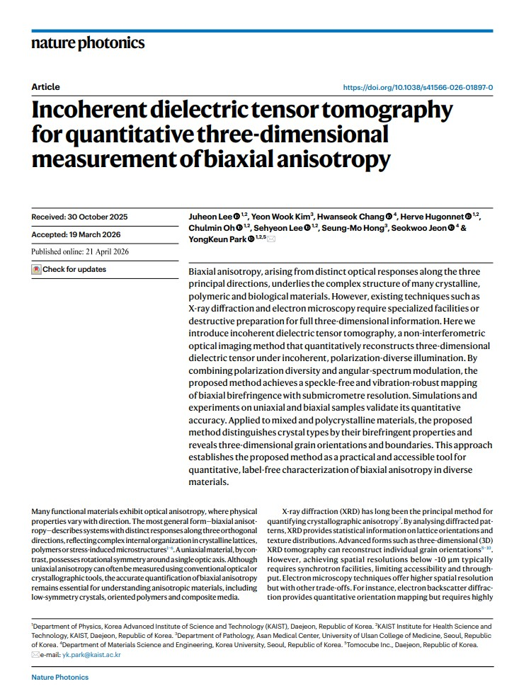
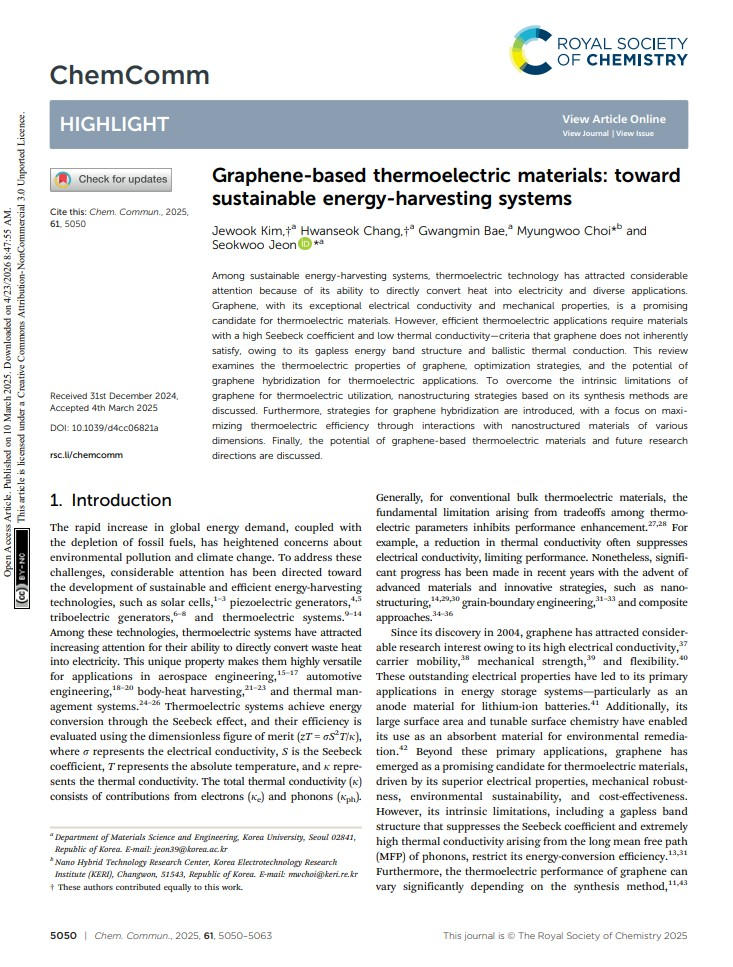
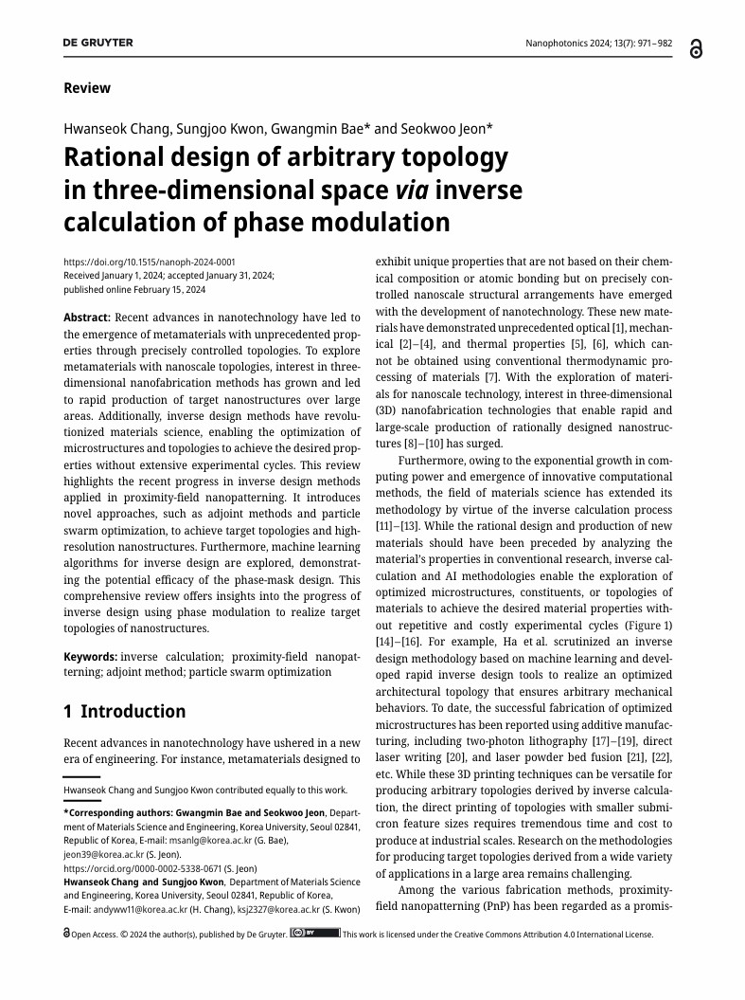

Ph.D. Candidate · Korea University
장환석
I am a Ph.D. candidate in Materials Science and Engineering at Korea University, specializing in nanophotonics and 3D nanofabrication. I am always open to collaboration with researchers in nanophotonics, metamaterials, and advanced manufacturing. Please feel free to reach out if you are interested.
// 01
My research centers on inverse design strategies for complex nanostructures and the realization of architected 3D photonic systems. By combining computational electromagnetics (FDTD, RCWA) with advanced fabrication techniques such as electron-beam lithography and atomic layer deposition (ALD), I develop physically consistent design frameworks that translate abstract optical functionalities into experimentally realizable nanostructures.
My broader goal is to establish scalable and physically interpretable design methodologies for controlling light–matter interactions in high-dimensional photonic systems.
// 02
Simulation & Programming
Nanofabrication
Material Characterization
// 03
prep
준비 중인 논문 제목을 여기에 입력하세요
Target journal 예정
[3]

Incoherent dielectric tensor tomography for quantitative three-dimensional measurement of biaxial anisotropy
Nature Photonics, Online published
[2]

Graphene-based thermoelectric materials: toward sustainable energy-harvesting systems
Chemical Communications, 61(27), 5050-5063.
[1]

Rational design of arbitrary topology in three-dimensional space via inverse calculation of phase modulation
Nanophotonics, 13(7), 971-982.
P1
포토마스크 제조방법 및 이를 기반으로 하는 자이로이드 나노구조의 제조방법
10-2025-0148095
P2
포토마스크 제조방법 및 이를 기반으로 하는 다이아몬드 또는 장작더미 나노구조의 제조방법
10-2025-0148102
// 04
2025.03 — 현재
박사과정 / Ph.D. Candidate
고려대학교 신소재공학부, 서울
나노구조체 역설계 및 3D 나노 아키텍처 응용 연구 수행 중.
2022.09 — 2022.12
현장실습 인턴 / Research Intern
KIST 전자재료연구센터, 서울
전자재료 분야 연구에 참여하여 실험 및 분석 업무 수행.
// 05
2025.03 — 현재
박사과정 / Ph.D. in Materials Science & Engineering
고려대학교 (Korea University), 서울
신소재공학부 박사과정. 나노포토닉스 및 3D 나노 리소그래피 연구.
2023.03 — 2025.02
석사 / M.S. in Materials Science & Engineering
고려대학교 (Korea University), 서울
신소재공학부 석사 졸업.
2018.03 — 2023.02
학사 / B.S. in Materials Science & Engineering
고려대학교 (Korea University), 서울
신소재공학부 학사 졸업.
2014.03 — 2017.02
졸업 / High School Diploma
한성과학고등학교, 서울
과학 중점 교육과정 이수.
// 06